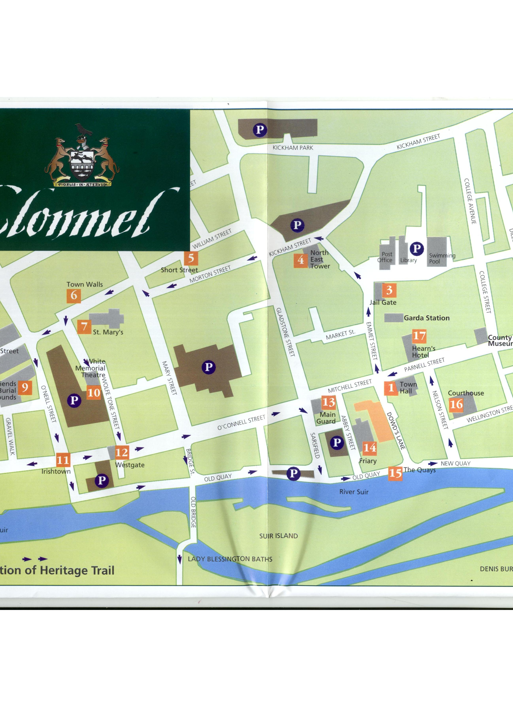

Clonmel - Chluain Meala
Meadow of Honey
Clonmel is the biggest inland town in Ireland and is situated in a valley among the Comeragh and Knockmealdown mountains with the Slievenamon Mountain to the East of the town. The River Suir runs through the town down to meet the Celtic Sea on the South Irish coastline.
Clonmel is built on the N24 between Limerick and Waterford. When visiting the town it is best to walk as it has a tricky one way system.
Clonmel is full of history. It was walled and fortified in the 14th Century and was home to the powerful Butler Anglo-Norman family. In 1516 it was besieged and taken by the Earl of Kildare and in 1650 it was attacked by Oliver Cromwell, who found great resistance.
Charles Bianconi became Major of Clonmel twice and gave Ireland its first transport system. Charles was brought to Ireland as a young child from Italy. In 1843 Charles had one hundred vehicles (horse and carage) in use.
